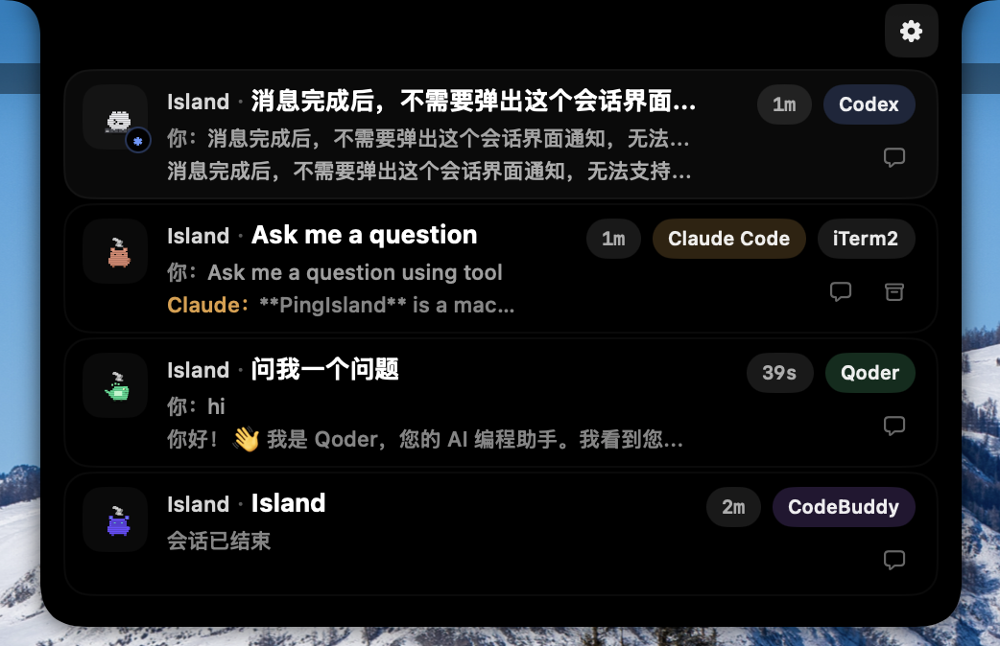
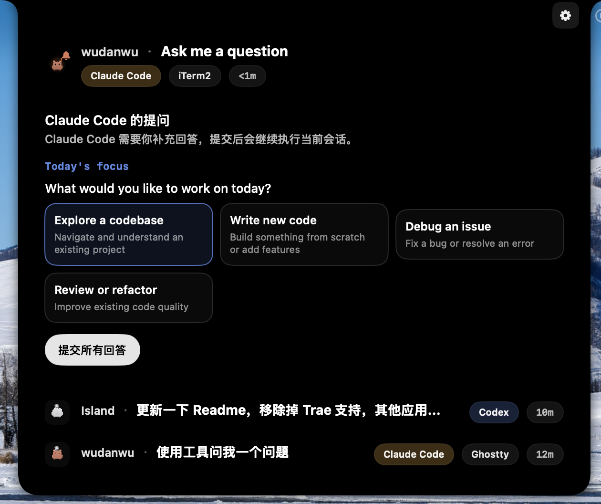

Claude Code, Codex, Gemini CLI, OpenCode, Cursor, Qoder, CodeBuddy, and Copilot.
Live routing
macOS 14+
Codex / Claude / Gemini
The calmest way to catch the moments your agents actually need you.
Ping Island surfaces approvals, questions, completions, and focus return in a native Dynamic Island-style layer for macOS.
Approve, deny, reply, and jump back to the right workspace.
Live Preview
attention surface online

session trust
Codex hooks + app-server sync
focus return
iTerm2, Ghostty, Terminal.app, tmux, IDEs
custom layer
Sound packs, mascots, and per-client identity
Core Features
Built around the interruptions that break deep work.
Attention-first UI
Stay compact until a session needs approval, input, review, or intervention.
Native action loop
Approve tools, deny requests, and answer follow-up prompts without hunting through tabs.
Precise focus return
Jump back to the exact terminal, tmux pane, or IDE window that spawned the run.
Codex-aware sync
Codex hooks, app-server threads, and rollout fallback stay coherent inside one monitor layer.
Custom signals
Map event-specific sounds and give each client a visual identity that feels personal.
Open-source trust
Independent, local, and native. The UI stays transparent because the project is too.
Pet GIF Showcase
One mascot system, all your clients.
Each client carries its own animated personality across the notch, session list, and hover preview.


Workflow
See the interrupt, act instantly, and return to the right workspace.
01
Observe the run
Hooks and app-server signals normalize into one session model before they ever hit the UI.
02
Surface the decision
Approvals, prompts, completions, and failures appear in the notch as the next highest-value action.
03
Route focus back
When you need the full workspace, Ping Island jumps to the exact terminal, tmux pane, or IDE host.
Question Panel
live intervention

Coverage
operator confidence
Notch visibility
Focus return accuracy
Cross-client clarity
Install
Start with the release build, or go straight to source.
Release path
- Open GitHub Releases.
- Download the latest DMG.
- Move Ping Island.app into Applications.
- Launch and enable the clients you want monitored.
Source path
git clone https://github.com/erha19/ping-island.git cd ping-island xcodebuild -project PingIsland.xcodeproj \ -scheme PingIsland \ -configuration Release buildView Repository
Open Source Signal
If Ping Island sharpens your flow, give it a star.
A GitHub star helps more people discover the project.